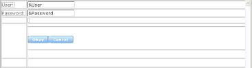
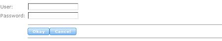

The Horizontal Rule control has only cosmetic implications for webforms. It is merely used frequently to separate other controls. To add a horizontal rule to the selected location, drag the corresponding icon from the toolbox and into the webform. The following picture shows a webform with two Horizontal Rule controls.  And the following picture shows the same webform at runtime. 
|
| Backlinks | |
| Category:Common Controls | Web Panel form |